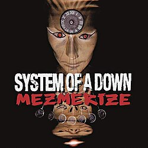
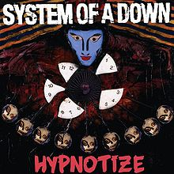

"System of a Down"
Escute o album AQUI

É o álbum de estreia da banda e apresenta um som agressivo, caótico
e experimental. Suas músicas misturam metal pesado com críticas políticas, sociais
e questionamentos sobre a sociedade. É um dos trabalhos mais intensos do grupo.
"Toxicity"
Escute o album AQUI

O trabalho que catapultou o grupo ao estrelato mundial e definiu o som do metal no início
dos anos 2000. Mantendo a crítica social ferrenha e as mudanças bruscas de andamento, o álbum
equilibra peso e melodia de forma magistral, impulsionado por clássicos absolutos como "Chop Suey!",
"Aerials" e a faixa-título.
"Steal This Album!"
Escute o album AQUI
Originalmente composto por sobras das sessões de Toxicity que vazaram na internet sob o nome de Toxicity II,
o disco foi finalizado e lançado oficialmente com uma estética minimalista de CD pirata. Apesar de sua origem
fragmentada, funciona como uma obra coesa e altamente criativa, trazendo faixas memoráveis como "Innervision" e "I-E-A-I-A-I-O".
"Mermerize"
Escute o album AQUI

A primeira metade do projeto duplo lançado no mesmo ano marca uma mudança sonora importante, com o guitarrista Daron
Malakian assumindo um papel muito mais proeminente nos vocais principais. O álbum é dinâmico, ácido e repleto de ganchos
pop misturados ao peso característico da banda, rendendo sucessos como "B.Y.O.B." e "Question!".
"Hypnotize"
Escute o album AQUI

Lançado seis meses depois, encerra o ciclo iniciado em Mezmerize com uma abordagem ligeiramente mais melancólica e
melódica, embora ainda carregada de urgência política. É o último álbum de estúdio da banda até hoje e se destaca pela
dualidade vocal entre Serj Tankian e Daron Malakian em faixas como "Lonely Day" e "Hypnotize".